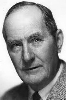

Country:United States, 62 minutes
Spoken languages:
Genres:Drama, Romance
Director(s):Christy Cabanne
Writer(s):Adele Comandini, Charlotte Brontë
Video Codec:Unknown
Number: 1445


Certification:
Storyline:
Jane Eyre is an orphan who was raised by her aunt until she came to Thornfield Hall as governess to the young ward of Edward Rochester. But Jane is attracted by the intelligent and energetic Sir Rochester, a man of almost twice her age. But just when Sir Rochester seems to pay attention to her, he invites the beautiful and wealthy Blanche Ingram to stay at his house.
Cast: 

Medium: Original DVD,
Comments: Part of: Leading Ladies - Classic 20 Movie Collection
Loaned: No
Aspect ratio: Unknown